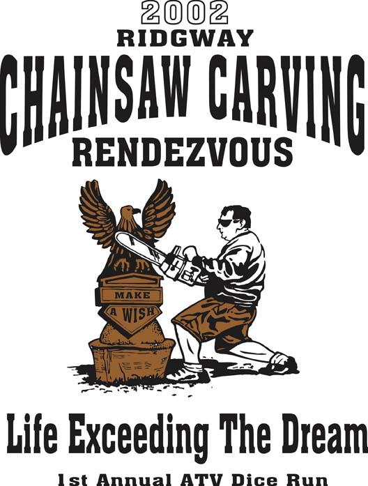
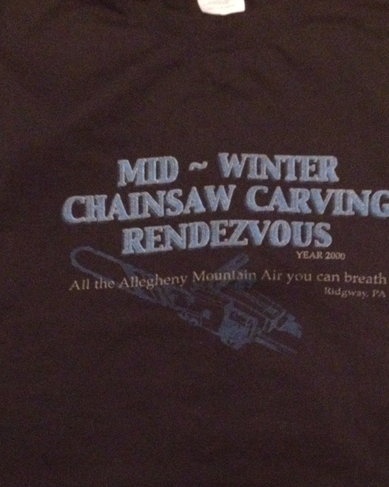

Welcome
The Chainsaw Carvers Rendezvous
The Ridgway Chainsaw Carvers Rendezvous started as a backyard gathering of six chainsaw carvers. In 2000, this relatively small group of carvers took it to a whole new level, and at the time, we thought this was quite a big gathering of carvers. Little did we know...Since then, it has grown to the world's largest event of its kind and evolved into a partnership of community and artistic spirit. Each year becomes a challenge to do better than the last!
It is an open invitation to all Chainsaw Carvers wishing to attend the Rendezvous. It is an opportunity for Carvers to share, sell, market and just feel good about who they are and what they do! To be able to measure the growth of the industry while moving the art form forward! To challenge their abilities and encourage their performance!
This was our intention when we started, and remains so to this day. And it is generally accepted that it is this non-competitive setting that makes the Rendezvous something truly special.
Yes, the event has come a long way since those early days, (every year, we have more and more carvers attending) and we look forward to the exciting opportunities and developments that are yet to come.
Since then, it has grown to the world's largest event of its kind and evolved into a partnership of community and artistic spirit. Each year becomes a challenge to do better than the last!
It is an open invitation to all Chainsaw Carvers wishing to attend the Rendezvous. It is an opportunity for Carvers to share, sell, market and just feel good about who they are and what they do! To be able to measure the growth of the industry while moving the art form forward! To challenge their abilities and encourage their performance!
This was our intention when we started, and remains so to this day. And it is generally accepted that it is this non-competitive setting that makes the Rendezvous something truly special.
Yes, the event has come a long way since those early days, (every year, we have more and more carvers attending) and we look forward to the exciting opportunities and developments that are yet to come.
The Dream
"At the very least, we make each other think. At our very best, we inspire one another to common heroics and a fresh, inspired look at our own creativity and human potential. We carry the responsibility for the gift that we have been given. Our expressions in wood reach out and in, farther than we imagine. From the twinkle of an old man's eye in Japan to the smile of a child in Europe, we touch them with our gift. We have more opportunity to express ourselves than any artists in history.Over the past years, The Ridgway Chainsaw Carvers Rendezvous has been no exception to this endeavor, and we should all be proud of our personal accomplishments. Without a doubt, we raise the bar each year with the statistics that are generated - hundreds of carvers and tens of thousands of dollars raised. The quality and size of the carvings goes up each year, and as well, more carvings hit the $1,000+ mark.
Some of our personal adventures will pass unnoticed, but some, not many, will be passed down to our descendents in the form of stories that may well some day be legends. Our lives are enriched through this international gathering and mingling of custom and language. We gain a better understanding of history and geography, commerce and currency. We establish a wider trust and a vast reservoir of relative information. We make friends in foreign lands and far-off states. We transcend our limitations and live beyond our dreams.
If anyone can come up with a better solution for life, please, don't tell me. I'm very happy living the life of a chainsaw carver."
About the 15th Annual Ridgway Chainsaw Carver's Rendezvous
Fine art at 12,000 RPM. Ridgway Renezvous: The World's Most Amazing Chainsaw Carving Event
By Rob Simbeck
RIDGWAY, PA--"The chainsaw," says Liz Boni, "will do for art what the electric guitar did for music."To the uninitiated, that might sound like hyperbole, but to the tens of thousands who gather in this postcard-pretty section of northcentral Pennsylvania each winter, it is a simple statement of fact. Chainsaw carving is the revved-up, sawdust-spitting segment of the art world, a place where the scent of pine and motor oil are as vital as the sculptor's hands and eyes in creating gorgeous works of art. Undertaken here before thousands of spectators, it is the adrenaline-fueled meeting of performance art and fine art, and Liz and her husband Rick are among those in the vanguard of the movement. Their passion is inspirational. Their enthusiasm is contagious. And their event--The Ridgway Chainsaw Carvers Rendezvous--is nothing less than the movement's Woodstock.
Each year, 25,000 people flock to this town in the gorgeous highlands known as the Pennsylvania Wilds to witness this event, a showcase that allows more than 200 chainsaw carvers from all over the world to display their talents, mingle with their peers, share and learn new techniques, and teach the craft to others. World Champions create one-hour "quick carve" sculptures and work on larger, more complex pieces of exceptional beauty and complexity throughout the week. There is also plenty of music, an auction of chainsaw art, the chance to buy large and small pieces from the assembled artists, communal meals, live music, and much more.
The Rendezvous, held the last week of February, will feature chainsaw carvers from more than a dozen countries and nearly 40 states, and an atmosphere that literally "buzzes" with creative energy.
In its size and scope, and in the worldwide attention it draws, it is almost beyond the comprehension of its delighted founders, who came up with the idea a decade ago, when Liz's husband Rick and his twin brother Randy, both chainsaw carvers, invited a few other carvers from the region for a weekend get-together.
"There were nine of them altogether," says Liz, "and they had so much fun they thought, 'We should do this again. We should show people what we do.'"
Spreading the word by internet helped attract 35 carvers, including one from England and one from Germany, to the first official Rendezvous, in 1999. The Boni's told the carvers, "If you can get here, we'll take care of you." That's still the case today, with many in the community offering spare rooms, hunting camps and church rectories as sleeping quarters, and cooking meals for the carvers.
Almost at once the Rendezvous began attracting the media, which was effusive in its praise of what Pittsburgh Post-Gazette columnist Gene Collier called "the delicious quirkiness of it all."
Once the first year was history, stories in the Associated Press, The Washington Post, CBS, ESPN. The History Channel, CBS The Early Show where Julie Chen actually came and carved, along with many other outlets helped draw bigger crowds every year. In fact, the event has changed locations three times to accommodate ever-larger crowds.
Carvers are drawn by the fact that the Rendezvous is cooperative rather than competitive, and by the straightforward integrity of the vision the Boni's have always had for the event.
"When I got an e-mail from Randy," says Rodney Holland, a Scottish carver, "I could tell it was from the heart. Here there's no competition. Nobody wins anything. Nobody gets a dime. And then when I found out it raised money for [charity], I was persuaded."
Rick and Randy had been carving for years before they helped launch the Rendezvous, and Liz found she had a knack for spreading the word. She and Rick are the owners of Appalachian Arts Studio, a hands-on learning facility offering classes in wood carving and pottery, an old-style print shop and dark room facility, and a gallery/museum dedicated to the history and growth of the art of chainsaw sculpture. Their daughter Zoe has also earned a name as a top carver, one of many women who excel at the art form.
Rick and Liz have traveled the world, teaching and demonstrating carving in Europe and Asia as well as throughout the U.S., and it's obvious that they have found nothing less than a calling.
"If someone had told me 15 years ago," says Liz, "that I'd be traveling around the world with Rick doing this, I never would have believed it."
She has become a believer, and has made believers out of the tens of thousands who flock to Ridgway each year, and who will be coming back again in February. She says, "To see the excitement, the pure energy that's everywhere in this town while the carvers and spectators are here--well, trust me, you don't want to miss it."
A Historical Overview from 2000 to 2014
2014 – Main Street, Ridgway, PA
15 years of celebrating Chainsaw Art!
Scott Dow – One of the new inspirations to this art form. Scotts brings movement and action to the wood. Many are inspired and motivated by his abilities with the chainsaw. Again, the bar is being raised.History of Ridgway- Councilman Jim
Ridgway and the Rendezvous- Martha Bralkowski

2013 – Main Street, Ridgway, PA
193 Carvers
Randy Boni – One of the co-founders of this event. Randy is truly recognized for his larger than life projects and truly one of the masters of this art form. He is a true believer in spreading the word and works of other carvers around the world.Highlight Video Rendezvous 2013- Mike Weiss
Dance for Ellen Rendezvous 2013- Altris
Seminars Rendezvous 2013-Appalachian Arts Studio
2012- The Rendezvous moved to Main Street, Ridgway, PA
220 Carvers
Brett McLain – Each year many European carvers fly in Newark, NJ and are met by Brett, who greets them and takes them to his home. He then finds a way to get all of them here for the event. Not to mention that Brett is an incredible artist. That being said, he is always thinking outside the box and truly inspires other to do so through his unique approach to chainsaw art.Rendezvous 2012 Recap Video Pa Great Outdoors
Seminars Rendezvous 2012- YellowLabWoodworks
2011
184 Carvers
Jeff Samudosky – Incredible talent. We misspelled his name or it somehow got omitted on the T-shirt just about every year. In 2002, he was the first to bring scaffolding to the event. That action alone raised the bar. His carvings consistently brought in top dollar at the auction, continuing to raise the bar.Seminars Rendezvous 2011- The Wolf Pack
Highlight Video Rendezvous 2011- Paul Devogue
2010 – Gillis Avenue Venue
175 carvers
In 2009 KB Pictures/Photography came to the Rendezvous and realized what a photo op it was. Their team visited carvers at their studios throughout the year. When we saw this picture of Dayton and Michelle Scoggins, we knew it would go on the T-shirt. Dayton Scoggins was winning competitions in England, Germany and the West Coast. He took wildlife carvings to the next level.Oldies but goodies from Ridgway Rendezvous 2010- Pawlingman
2009 – Gillis Ave venue
200 carvers
Rick Boni one of the co-founders of the event and Owner of Appalachian Arts Studio and Promoter of the Rendezvous welcomes all to who come to Ridgway for this incredible event. A quiet natured man, his art speaks volumes.Ridgway Rendezvous 2009 Highlights Pt1- Sputnik
Ridgway Rendezvous 2009 Highlights Pt2- Sputnik
Chainsaw Love 2003- Sputnik
Highlight Videos and Pictures Rendezvous 2009- The Wolfpack
2008 – Gillis Ave venue
193 Carvers
Dennis Beach is one of the hardest working Chainsaw Artists in the industry. He is a performance artist extraordinaire. Every video and article about the Rendezvous usually featured Dennis. He also promoted the event at all his contracted Fairs and Festivals.Highlight Video Rendezvous 2008- Unknown
2007 Event was moved to Gillis Ave – Larger area for carvers
186 carvers
At the time, Bill Plant was the voice of Chainsaw Carving. He was the first President of the Chainsaw Carvers Guild. Garry Patterson was his mentor and one of the legends of the carving industry. This is Gary's carving of Bill carving.Picture Book Ridgway 2006- Robbin Wenzoski
The Throne Project Rendezvous 2006- Angela Polglaze

2006 Ridgway Fireman's Grounds
185 carvers
Featured artists --- Jesse Groeschen – The Art of Chainsaw Carving Fox Chapel Publishing. Jesse Groeschen, an incredible artist and chainsaw carver, wrote a great book featuring top artists in the Chainsaw Carving arena published by Fox ChapelJ Chester Armstrong Chainsaw Rendezvous Ridgway pt 1
J Chester Armstrong Chainsaw Rendezvous Ridgway PA pt2
J Chester Armstrong Chainsaw Rendezvous Ridgway pt3

2005 – Ridgway Fireman's Grounds
Featured Artist – Judy McVay
Judy from Washington State and part of the Backus /McVay family of carvers, sent us this most amazing carving, so we just had to put it on the T-shirt The Rendezvous has grown from a 3 day event into a 10 day event. Seminars were provided throughout the week, and carvers got to spend quality time with each other.Highlights Video Rendezvous 2005- Sputnik
Another Highlights Video Rendezvous 2005- Sputnik
2004 –Ridgway Fireman's Grounds
195 Carvers Attending – 8 countries represented
Featured Artist is Don Winner. Don and the Confluence Lions Club founded "Addison" one the forerunners of chainsaw carving events in the US. The Event is still one of the long standing great events for carvers to attend.Highlight Pictures and Info Rendezvous 2004- Holger Baer
2003 – Fireman's Grounds Ridgway, PA
172 carvers
Featured artist is Brian Ruth and Masters of the Chainsaw Both Rick and Randy were part of Masters and very proud of it. They got bookings at Fairs and Festivals and other engagements through Masters. It was an elite group of carvers that are still going today. We also welcomed carvers from Japan and Australia. Such a wonderful group of artists and so much creative energy.Highlight Pictures and Info Rendezvous 2003 - Holger Baer

2002 – Fireman's Grounds, North Broad Street, Ridgway
We were invited by the community to move the Rendezvous to town and the "Ridgway Chainsaw Carvers Rendezvous" was born and Ridgway was proclaimed " 103 carvers came to the Rendezvous. Wayne DeMoranville was bringing ice carving to the event. He was also our first featured artist on the T-Shirt. Since 2002 we have dedicated the t-shirt to carvers who have contributed to the art form and the Rendezvous throughout the year.Highlight Pictures and Info Rendezvous 2002 Part 1 - Holger Baer
Highlight Pictures and Info Rendezvous 2002 Part 2 - Holger Baer
2001- Mid Winter Chainsaw Carving Rendezvous
2nd year at Sandy Beach State Park
58 carvers showed up, along with a huge crowd of spectators. We met so many new carvers. In April, thanks to Joe King, the Carving Post was born. This was an internet forum where carvers were able to post pictures and keep in touch; this created an avalanche in the chainsaw carving world.Highlight Pictures and Info Rendezvous 2001 - Holger Baer

2000 Mid-Winter Chainsaw Carving Rendezvous
Held at Sandy Beach Park about 3 miles outside of Ridgway. Winter boredom and the internet sparked an idea to see how many carvers were out there and would they be willing to come together to carve. 33 carvers came, 2 of whom were international. We thought that was incredible. The article about it in our local paper went viral on the Associated Press News Wire (AP) - funny viral was not a term back then. Holger Baer from Germany and Judy Pratt, NY, both started a web sites about the Rendezvous.Highlight Pictures and Info Rendezvous 2000- Holger Baer